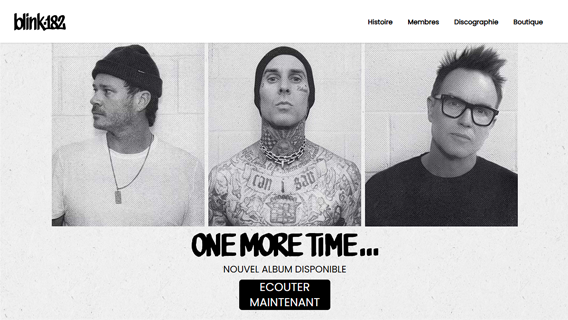

Blink-182-fr
"Blink-182-fr" est un site réalisé sur un groupe de musique. Il s'agit du premier projet que j'ai développé dans le cadre de mon apprentissage du HTML et du CSS. J'ai utilisé Tailwind pour me faciliter la mise en page et le responsive. Il comporte un peu de JavaScript pour l'interactivité du menu "hamburger" sur les petits écrans.
Voir le projet